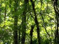

吉祥寺を紹介するページ
 吉祥寺はどんな街か。
50年前には駅前にたぬきが出たという東京郊外の街です。夕飯の買物に行くような普通の街であったのが、別の街から買物客が集まるような所に変わったのは、20年前くらいでしょうか。昔からの店の間に、安売りのドラッグストアばかりが目につくようになりました。
夜になると、ストリートミュージシャンが、シャッターの締まったさつま揚げ屋や、乾物屋の前で、にぎやかに、ある時はひそやかに演奏しています。
トップページへ